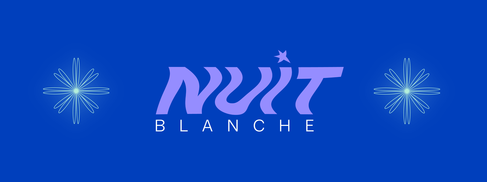
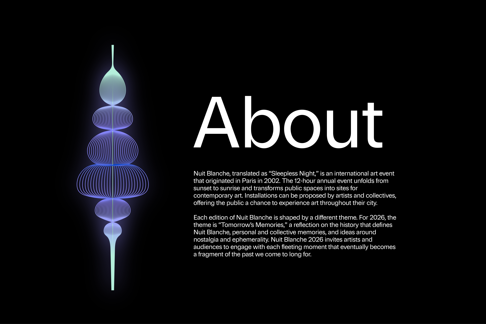
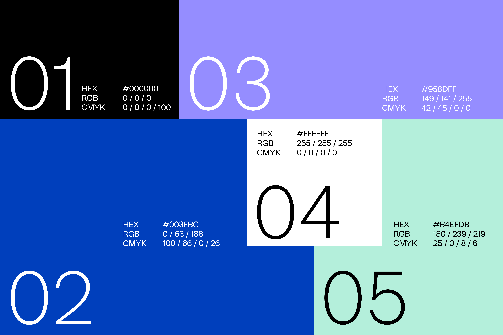
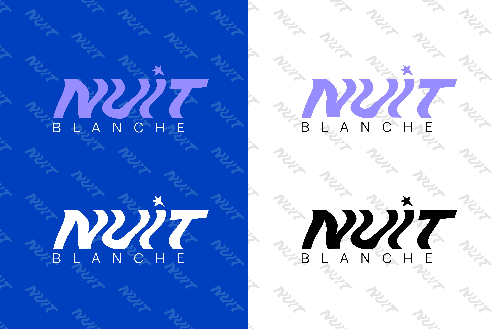
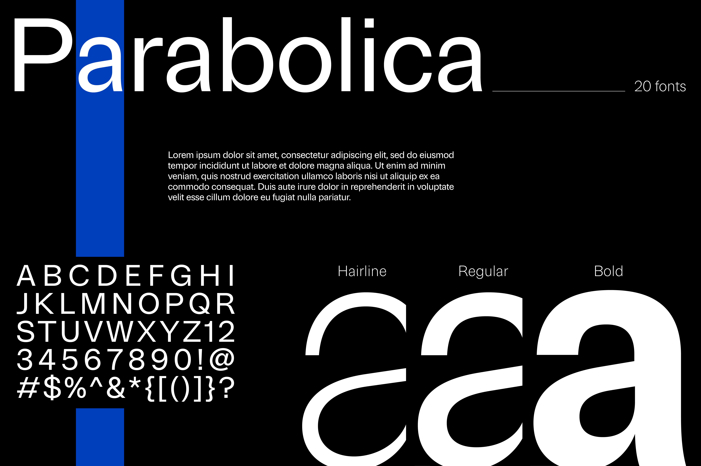

Conceptual brand identity for Nuit Blanche 2026
Role
- Brand strategist
- Brand designer
- Graphic designer
Project Type
- Branding
Tools Used
- Adobe Illustrator
- Adobe Photoshop
Nuit Blanche 2026 is themed around nostalgia, ephemerality, and reflection on the history of art exhibits which shaped the event series in past years. To begin this brand identity redesign, I researched past installations to learn about the mediums and messages of showcased art to develop a relevant brand mission: Nuit Blanche exists to encourage art participation from audiences and artists alike and transform them into the narrators of contemporary cultural landscapes.
I established that collaboration, social commentary, experimentation, and diversity are the key values of the brand. I then narrowed down the target audience to young adults ages 18-30 who are active in urban living, artists or art enthusiasts, and up for attending an evening/overnight event. Pain points for this group include difficulty finding affordable events, sparse opportunities to experience arts and culture, and the barrier of entry for young artists to have their work displayed publicly. To ease these pain points, the brand voice must be approachable, intriguing, and imaginative.
The unique selling proposition (USP) to focus on in marketing communications is the event's high level of accessibility (free entry, takes place in public spaces, spans various locations in each city, accepts projects from a variety of art disciplines) After developing the brand strategy, I proceeded to execute on the visual identity design. Early sketches and moodboards were referred to while working in the Adobe Creative Suite to design a completed visual identity package. Designing to capture the mystique and cultural significance of this event series was a challenging but rewarding task that required research, strategic thinking, and creative execution.

Nuit Blanche, translated as “Sleepless Night,” is an international art event that originated in Paris in 2002. The 12-hour annual event unfolds from sunset to sunrise and transforms public spaces into sites for contemporary art. Installations can be proposed by artists and collectives, offering the public a chance to experience art throughout their city. Each edition of Nuit Blanche is shaped by a different theme. For 2026, the theme is “Tomorrow's Memories,” a reflection on the history that defines Nuit Blanche, personal and collective memories, and ideas around nostalgia and ephemerality. Nuit Blanche 2026 invites artists and audiences to engage with each fleeting moment that eventually becomes a fragment of the past we come to long for.





You May Like


I don't bite.
Feel free to reach out for any inquiries or just to chat (I'd love to exchange music recs).
Let's connect!
estrellaflagg.design@gmail.comEstrella Flagg ©2026